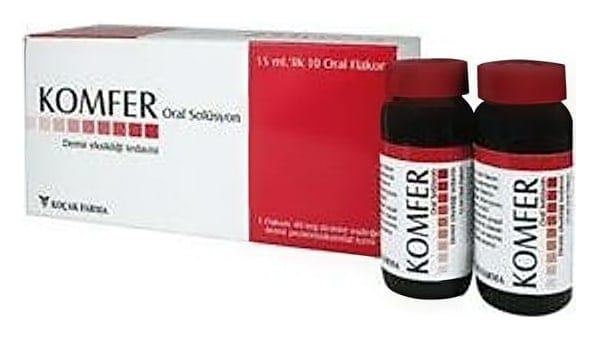

Komfer 40 mg Oral Çözelti, 15 ml X 10 Flakon

Ne için kullanılır
KT · Bölüm 1KOMFER kahverengi, şekersiz, çilek aromalı oral çöz elti olup plastik ka paklı, 15 mL’lik tek
kullanımlık flakonlarda kullanıma sunulmaktadır. KOMFER, etkin madde olarak 40 mg Fe +3 (üç değerli de mir)’e eşdeğe r miktarda demir pr oteinsüksinilat içerir. Demir proteinsüksinilat bir demir formudur. İns anlarda demir, kırmızı ka n hücrelerinin esas maddesi olan he moglobin adlı pr oteinin üretimi ve görevi için çok önemlidir. KOMFER, yetersiz be slenme, ha milelik, emzirme ve kan ka yıplarından ileri ge len de mir eksikliği kansızlığında (anemi) koruyucu ve teda vi edi ci olarak kullanılır. Çoc uklarda kullanılabilir. Bu ürünün etkin maddesi olan de mir pr oteinsüksinilat diğer de mir içeren ürünlere göre mideyi daha az t ahriş eder.